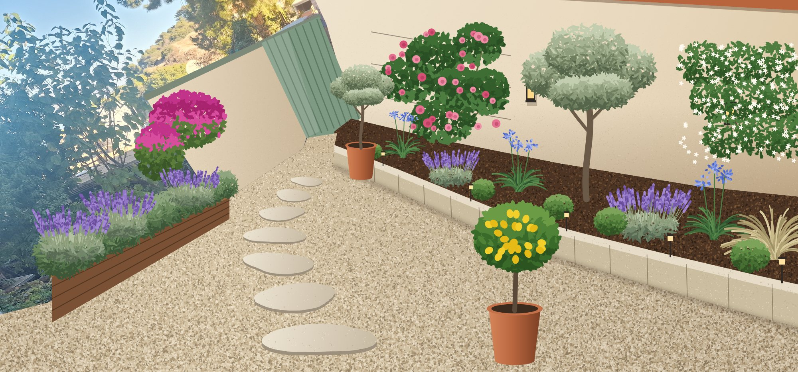
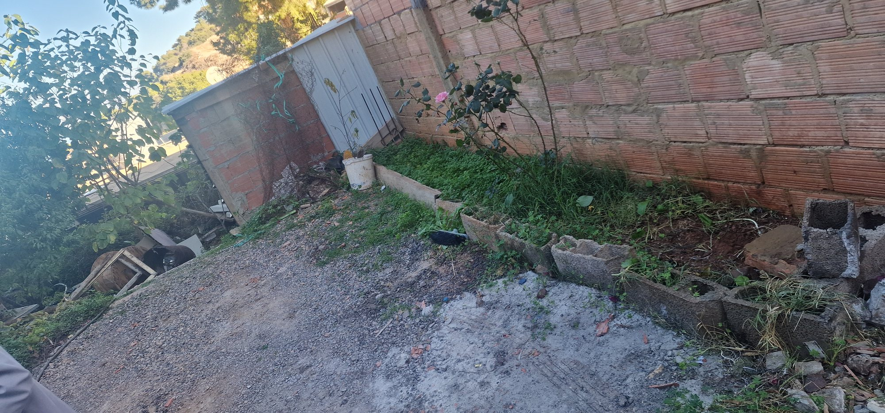

داري الجديدة
المدخل والجنينة، بنفس المكان ونفس الزاوية تاع الصور. حرّك الخط باش تقارن بين الحالة الحقيقية دروك والتصميم الجديد.
مدخل الدار

 قبلبعد
قبلبعد
تلبيس أملس بالأبيض الدافي على الدار، الطابق الفوقاني والحيط الحدودي. وزيد كوبين (couvertine) سوداء فوق الحيط.
حافة سوداء (anthracite) مع شريط LED دافي تحت السقف.
مكسي بشرائح خشب عمودية (claustra bois)، وهي من أكثر الحاجات الموضة دروك.
بلاط بورسلان كبير 60×120 بلون الحجر، وما يزلقش (antidérapant R11) لأنو برّا. والهوز (tuyau) يتخبّى في علبة.
إطار أسود وحجرة (appui) فاتحة تحته. والباب الحديد الأسود يبقى، يمشي مع التصميم.
قصاري سود: زيتونة، حشيش زينة (Pennisetum)، وخزامى. فنارات up/down على الحيوط. والوردة والبوغنفيليا لي عندك يبقاو.
الجنينة


قبلبعدالتصميم مرسوم فوق صورتك، ماشي صورة فوتو حقيقية. الهدف يوريك وين يروح كل حاجة وكيفاش تجي الجنينة.
واش تبدّل في الجنينة
تلبيس (enduit) ودهن بلون الرمل، مع شريط قرميدي فوق وزوج فنارات.
نحّينا البلوكات المكسّرين ودرنا حافة حجرية مستقيمة، والتراب مغطّى بقشور الخشب (paillis).
قرافي ناعم بلون فاتح فوق الأرضية، وحجر كبير للمشي يوصّل للباب.
الحيط ملبّس كيما الحيط الكبير، والباب الحديد مدهون بالأخضر الزيتوني.
بلاصة الخردة ولات صندوق خشب طويل فيه إكليل الجبل والخزامى، وفوقه بوغنفيليا.
الوردة لي كاينة تبقى، نزيدولها أسلاك على الحيط باش تطلع وتكبر.
النباتات
| النبتة | وين | الشمس | السقي |
|---|---|---|---|
| زيتونة Olivier | وسط الحوض، وواحدة صغيرة في قصرية قدّام الباب | شمس | قليل، مرة في الجمعة في الصيف |
| وردة متسلقة Rosier grimpant | الوردة لي عندك، على الأسلاك | شمس | متوسط |
| خزامى Lavande | الحوض والصندوق الخشب | شمس | قليل بزاف |
| إكليل الجبل Romarin | الصندوق الخشب (سياج قصير) | شمس | قليل بزاف |
| أغابانثوس Agapanthe | الحوض، بين الخزامى | شمس / ظل خفيف | متوسط |
| ياسمين Jasmin | على الحيط في الطرف اليمين | شمس / ظل خفيف | متوسط |
| بوغنفيليا Bougainvillier | على قرنة البيت الصغير | شمس | قليل |
| بوكسوس كورة Buis boule | قدّام الحوض | شمس / ظل خفيف | متوسط |
| ليمونة في قصرية Citronnier en pot | في القرافي، قدّام الحوض | شمس | منتظم، ما يجفّش |
خطوات الخدمة
- التنظيف
نحّي الخردة، البلوكات المكسّرين، البيدو والحشيش. قلّب تراب الحوض بالفاس على 30 سم.
- الحيط
تلبيس الحيط والبيت الصغير، من بعد الدهن. دهن الباب الحديد بدهان الحديد (antirouille).
- حافة الحوض
حافة حجر أو بوردور بيطون مستقيمة على طول الحوض.
- التراب
زيد تراب زراعي وسماد (fumier) مخمّر، وخلّط مليح.
- الغرس والسقي
اغرس من الكبير للصغير: الزيتونة، الياسمين والوردة لور، من بعد الأغابانثوس والخزامى، والبوكسوس قدّام. ركّب السقي قطرة قطرة (goutte à goutte).
- الأرض
حط بلاستيك ضد الحشيش (géotextile) تحت القرافي، اختار حجر المشي، وحط قشور الخشب فوق تراب الحوض.
- الإضاءة
فنارات صغار بالطاقة الشمسية على حافة الحوض، وزوج فنارات على الحيط.
نوفمبر وقت مليح للغرس في الجزائر: الزيتونة، الخزامى، إكليل الجبل والوردة يغرسوا دروك. الأغابانثوس والبوغنفيليا والليمونة خير تغرسهم في الربيع (مارس–أفريل) كي يسخن الجو.